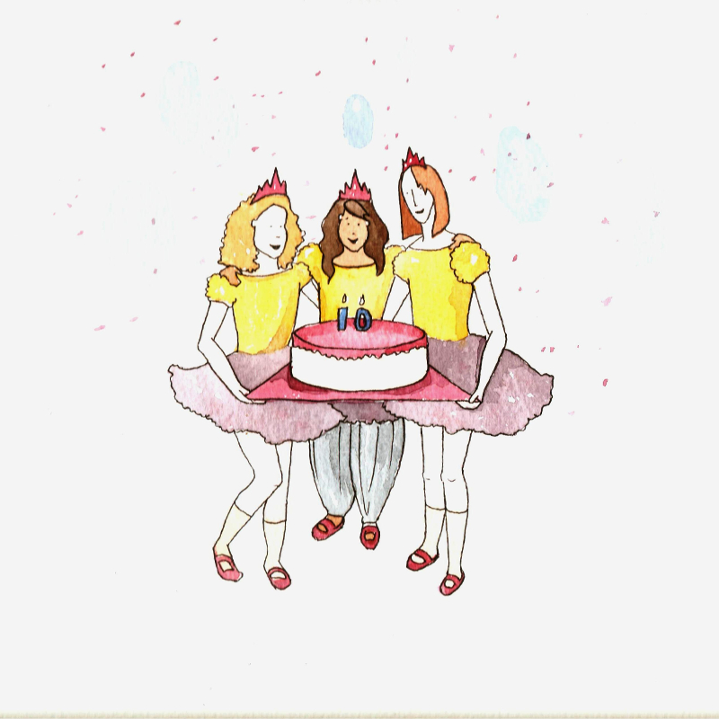

February 11, 2012
‘Simplicity echoes reality’
Artist Sara Aziz believes in addressing issues with subtlety
© Sara Aziz
Monet-admiring Sara Aziz loves the feeling of being an artist. “I love it! I love being creative all the time!” she said to me in an interview. A lot of Sara’s work deals with the relationship between people and their environment, the overlapping of internal and external milieus. “I observe people and their behaviours in different sorts of environments. The environment, and our society, traditions and personal relationships are important. I keep myself open to inspiration from literally everything around me – from magazines to pets to fancy footwear.”
When asked for her definition of art, she said, “It is practically impossible to define what art is today, and one invariably oversimplifies it. I believe that art is the result of intentional creative exercise, be it painting, literature, performance or music. Today, neither can intentions behind art be defined nor its characteristics and mediums be listed. But art always carries traces of the artist; even art made with the intention of being completely detached from the artist speaks of those intentions. Therefore, the artwork and the artist maintain a special connection. And every artwork invokes from its imagery, colour, sound or touch something within its viewer. Thus, an artwork becomes the supernatural connection between two people.”
Her work has a very strong illustrative quality. “It is tempting for people to question what about it makes it more ‘art’ than ‘illustration’. My work deals with a lot of grave sociocultural anthropological issues, and I felt that making incredibly loaded work with an extreme emotional impact wasn’t really real or honest. I wanted to deal with these things in a way that was reflective of how we deal with them in real life – with subtlety, gradually, and sometimes even subconsciously. And to do that effectively, I realised that what worked best was to strip down to the basics. So I took off the paint, took away the symbols and the excessive imagery, and brought it down to very minimalistic drawings. I wanted an outward pleasantness to the drawings, a welcoming air that initially veils a more serious, and sometimes sad, truth. For me, that is an honest representation of the world around us. We come in layers, each hiding a deeper one beneath it. Simplicity echoes reality; the work’s designed randomness, banality and wit is reflective of a mind’s haphazard workings. Hence, the illustrative style is a tool adopted to support and enrich my work.”
Regarding her first artwork, she said, “My mother has preserved in a frame a tiny piece of paper which, what we like to joke about, was my ‘first artwork’. Dated 1989, when I was 2, the note has these little diagonal dashes made with a pen. When my mother had asked what I had drawn, I had said, ‘Baarish (rain).’ ” Interestingly, she still maintains her first medium. However, her favourite medium is painting. “For me, it’s still the most seductive of mediums. I find the textures, colours and even the smell of paint enticing. There is something earthy and primitive about paint that, compared to other mediums, I find unmatched.” She frequently depicts cats, often as representations of herself, in her artworks. And their recurring themes include body dysmorphia, emotions and sexuality. She is currently working on some witty pieces exploring the relationship of women with their bodies.
The best reaction she received on her work was after her degree show in 2010 when, from some 250 students, Sara’s work was reviewed to be the highlight of the show by one of the top art publications of Scotland. On the other hand, “it’s very disappointing when someone you admire doesn’t say or give away anything after looking at your work. I want people to always take something away, even if it’s a smile. I have had some Asian aunties frown disapprovingly at some of my works, but I prefer that to having no reaction at all.” She said it’s important that people understand or like her work. “Even though I love making art for the sake of it, the fact that I can create awareness about important issues with my work is equally important. I neither expect everyone to understand and/or be moved by my work nor is that important to me. But the fact that some people connect with my images, appreciate them or want to own them, gives me a greater sense of purpose. While her art fulfils her, it also leaves her restless. “Every time I produce an artwork, I learn something new, which needs to be expressed. It’s a circle.”
Sara said there are some artists who like to believe that their works have sprung out of genuine, unadulterated inspiration, but “I truly believe that’s impossible. You spend all your life looking at imagery, much of which is art in a broader context. You like the juxtaposition of two colours or the energy in a stroke stays with you, and inspires you on some level. I, too, have been inspired by many artists over time. Some of the artists that she admires the most include Yoshitomo Nara, Jenny Saville, David Shrigley, Tracey Emin and Ron Mueck; whereas among the deceased, her favourites these days are Egon Schiele, Roy Lichtenstein, Alberto Giacometti and Gustav Klimt among others. Right now, she absolutely loves Yoshitomo Nara’s ‘White Kitty’; whereas among her own works, ‘I love to be loved by you’ is her favourite. When asked who she’d like to receive training from, she said, “Leonardo da Vinci, particularly because I desperately wish I knew him. I fantasise about how he and I would’ve had a special connection when we would’ve met because both of us could effortlessly write backwards.”
She believes criticism plays a tremendous role, in some ways, in shaping her artwork. “I often work about the negativities that surround us in life. For example, people are forced into set moulds and ideals, like in terms of beauty or social norms dictated by religion or culture. I find it funny that we live in a bipolar world; one half criticises, and the other criticises critics. So, essentially, I guess we are all the same.” She doesn’t take criticism well, though. “This is something I have been trying to work on. I find it hard to believe that any artist takes criticism particularly well.”
Talking about her process of producing art, she said, “Usually, I sketch my ideas over and over again, playing with variations and comparing them with one another to decide what works best. I usually have an aim from the beginning, like which emotion I want to invoke or what text I want to play with. Everything else then works around it. Sometimes, it takes me days just to decide which handwriting, type of pen or ink colour works best for the three-word text on the bottom of a drawing. Then, after finalising a maquette, I make the final piece, which itself can take many tries until I approve it. My recent works are very clean and minimalist; so, there’s no room for making mistakes.”
Her work “studies the internal workings of people and communities, of egos and ids, and raises important questions about who we are today. It regularly references emotions, and questions the role of our external milieus in how we understand, deal with and express them. In an environment like Pakistan, issues like love, lust and sex are almost separated from reality, their concepts hazy, romantic notions. A person’s relationship with their body, for example, is of an intensely primal and intimate nature, and I question the role of the media, cultural stereotypes and religious implements like the purdah that grossly influence it. I question how time and geographically varying ideals of body types can lead to seriously profound uncertainties of identity, individuality and honesty. I feel that it is absolutely essential to raise and contemplate these issues, as blindly following social norms or accepting how external elements affect us negatively is not only emotionally detrimental to us directly, but also teaches our future generations that contentment is an unattainable goal.”
Talking about art being taboo in the Pakistani society, she said, “There are a number of factors that contribute towards art being taboo in certain societies in Pakistan. First of all, Pakistan is a struggling economy where a lot of preference is given to fields like medicine and engineering, which guarantee, to a far greater extent, a job and a decent, lifelong income. Fields like the creative arts have a lower ratio of individuals who succeed in their field, and are therefore considered too risky a career choice to invest education in. Religion also plays a role, as a widely understood interpretation of Islam condemns some aspects of art – figure painting in particular. Ziaul Haq’s era saw this at its worst, when the only openly acceptable forms of art were calligraphies and landscapes. This undermined art as a field, and as a consequence of budget cuts and lack of artistic freedom, many people were further discouraged from pursuing a creative career. Another factor that might have existed, albeit subtly, is the fact that some of the early forerunners of the Pakistani art world, like Sadequain, maintained a somewhat bohemian disposition. The most prominent artists were often associated with drinking and an otherwise carefree and liberal lifestyle that scared the conservative majority into believing that the entire industry represented something that they could not or did not want to be a part of. Despite all these and more factors, time has seen a significant change in the way Pakistan sees art, and hopefully, with more awareness and success stories, more weight and respect will be given to the field.”
She said the arts play a critical role in the development of any society by “studying and understanding reality, our environment and the human condition. Art education, with its virtues of increasing creativity, productivity and originality, proves to be paramount in providing a culture with shape and voice. Some of the greatest minds in history have belonged to artists and their contributions are innumerable. An example that is close to heart is of Allama Iqbal’s role as a poet in creating the awareness and desire for a separate nation in millions of people. As it happens, in a country riddled with economic and political problems, the arts tend to be ignored as ‘immediate concerns’ are addressed, but it is all the more important in such times to allow the arts to retain optimism in peoples’ lives. The people and the government need to realise the importance of art and take measures to ensure that the field is not undervalued as it was in the past.”
She believes it’s easier, in some ways, to be an artist today. “In the past, the technical skills of painting and drawing played a tremendous role in defining the worth of an artist. Now, despite there being more competition, the genre of art has been extended by establishing more specialisations. So, within an individual’s realm, there’s more room for growth.”
She is sure that some contemporary artists produce controversial art only because controversy sells. “Not all artists in the world stay in the game to be sincere and honest ambassadors of their feelings. Sometimes, a certain topic attracts more attention than others, and I imagine it must be very tempting for people desperate to be discovered to exploit the situation. But the coin has two sides; as unfair as it is to exploit controversial topics you don’t care about to raise sales, it is also unfair to have to steer away from a controversial issue that you genuinely care about because you’re afraid you’d immediately be branded as a ‘sellout’.”
She said, “I recently read a fascinating article that quoted Charles Saatchi ferociously accusing most of today’s art buyers of having no genuine interest or passion for art, calling art collection the sport of the Hamptonites. It was a disturbing thought; it makes you feel like your fate lies in the hands of a bunch of rich folks who see art as mere brands. But the truth is that while it may be true that many art enthusiasts are in it solely for the investment or because art is ‘cool’, there are also many patrons out there, supporting the industry physically and financially without any personal gain. In places especially like Pakistan, where art is often not given its due importance, what keeps people continue supporting art, exhibitions, art literature, etc, is not the glamour of the art world, but the deep-rooted connection and respect for the nucleus of the industry: art.”
After graduating from Scotland’s University of Dundee, Sara returned to Lahore and taught A-level art and design, and also assisted Salima Hashmi with a course at the Beaconhouse National University. She has great respect for teaching, as her father was a professor of medicine. She believes what educationists do is change the future of nations, let alone that of individuals. “It is vital for any aspiring artist to have the right kind of guidance and mentorship and I would be honoured if I could provide that to somebody someday.”
First published in Pakistan Today